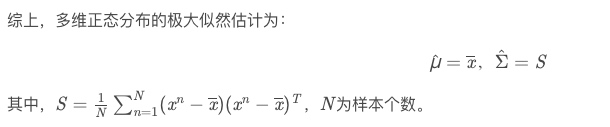

所属 Topic：统计学基础 · 类型：概念
1. 离散型统计分布#
二项分布#
实验重复n次，每次实验相互独立（伯努利实验），实验有两种结果，成功概率p
X~B(n, p)
- 概率分布 f(k) = C_n^k p^k(1-p)^{n-k}
- 期望 E(X) = np
- Var(X) = npq
几何分布#
在伯努利试验中，得到一次成功所需要的试验次数 k。在得到第一次成功之前所经历的失败次数 k
$f(x)=p(X=k)=(1-p)^{k-1}p$
- E(x) = 1/p
- var(X)= (1-p)/p^2
泊松分布#
$P(X=k)=\frac{\lambda ^k}{k!}e^{-\lambda}$
- E(X) =\lambda
- Var(X) = \lambda
超几何分布#
适用场景：抽到第k次成功的概率。箱子中一共N个求，红球有M个，现在从箱子中开始无放回的抽取n次，则抽到k次红球的概率：
$P(x=k)= C_M^k C_{N-M}^{n-k}/C_N^n$
- E(X) = M/N*n
-
2.连续型统计分布#
均匀分布#
均匀分布 f(x) = \frac{1}{b-a}(a<=x<=b)
- E(X)=(a+b)/2
- Var(x) = (b-a)^2/12
正态分布#
X~N(\mu, \sigma^2)
数据的正态性检验#
(1) PP图与QQ图
(2)
KS检验
SW检验
指数分布#
密度函数f(x) = \lambda e^{-\lambda x} x >= 0
- $ E(x) = 1 / λ $
- var(x) = 1/λ^2
t分布#
t分布也称为学生分布，通常比正态分布要更平坦，t分布的参数是自由度t(n)
卡方分布#
n个独立的标准正态变量的平方和的分布，称为具有n个自由度的卡方分布。
卡方分布的特点：
- 卡方分布的变量值始终是正数
- 卡方分布的期望 E(X^2)=n
- 方差D(X^2)=2n
- 卡方分布具有可加性。若U和V分布服从自由度n1, n2的卡方分布，且相互独立则U+V服从n1+n2自由度的卡方分布
- 整体分布右偏，随着自由度变大，逐渐偏向于对称

F分布#
F分布是由R.A.Fisher发明的，两个卡方分布U和V相互独立，则
$F=\frac{U/n_1}{V/n_2}服从自由度为n1,n2的F分布，记为F-F(n_1, n_2)$
3. 常见分布之间的关系#
分布相关#
综上，多维正态分布的极大似然估计为：


4.样本统计量的概率分布#
实际中，我们可能更关注的是统计量的分布情况，比如平均收入是多少，方差是多少，低收入家庭比例是多少？
一般我们都是通过抽样的方式，计算样本统计量，然后作为总体统计量的估计
样本均值#
样本均值的分布与总体的分布以及样本量有关，
- 如果总体是正态分布，则不管n大小，样本均值都服从正态分布
- 如果总体其他分布，在n较大(>=30), 根据中心极限定理，样本均值
【中心极限定理】
从均值为\mu, 方差为\sigma^2 的总体中，抽取样本来那个为n的随机样本，则当n充分大的时候后，样本均值的分布近似服从，均值为\mu, 方差为\sigma^2/n 的正态分布。即
$\bar x - N(\mu, \sigma^2/n)$
比例分布#
比例其实类似于均值
$p - N(\pi, \pi(1-\pi)/n)$
统计量的标准误差#
标注误差，是指样本统计量分布的标准差，
标准差，原始数据反应离散程度的，标准差